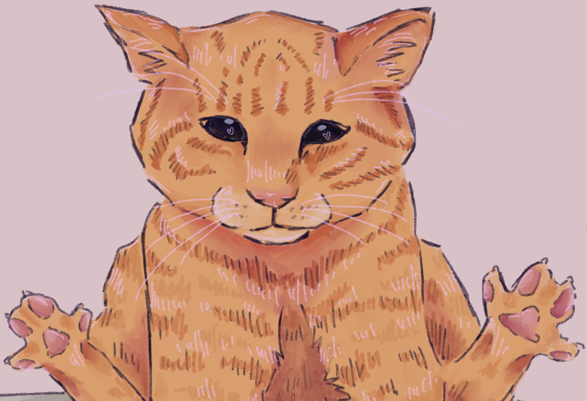
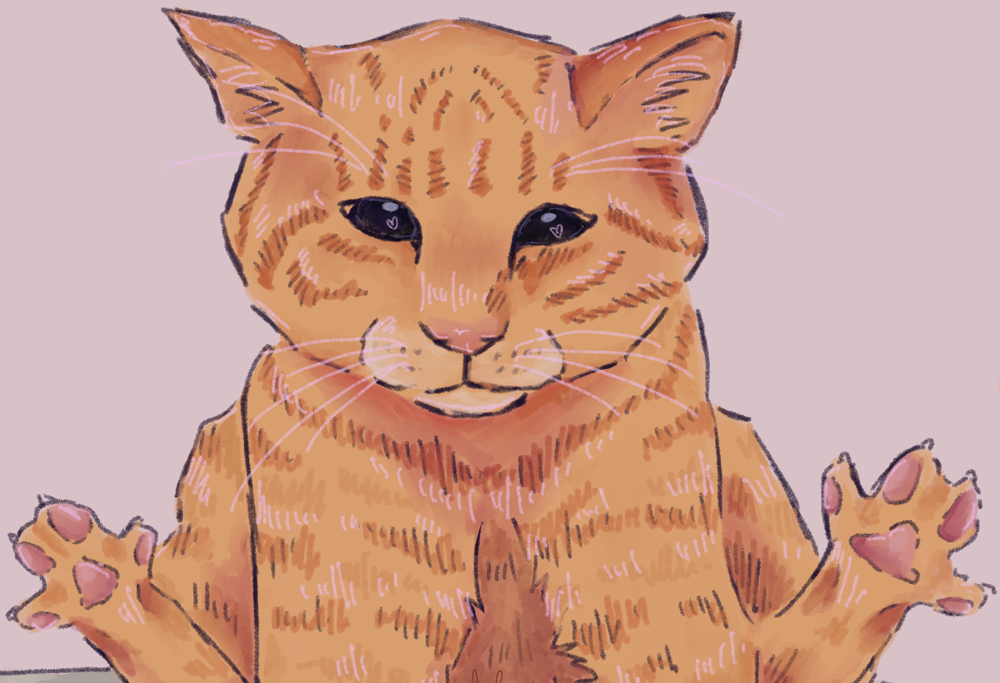

Cats are one of the most common pet to own. With our website, you can learn more about your cat and other breeds as well! There are fun content and cool information! You can learn if these cat breeds like to cuddle or just want company!
No matter the fur color, all cats should be loved and taken care of! They look cute, but they are a lot to handle. It takes patience and commitment for a cat.
Using fun sections as well as digitally-drawn art, people can learn in a unique way! Learn famous cats like Mr. Fresh! All cats start somewhere towards their fame!